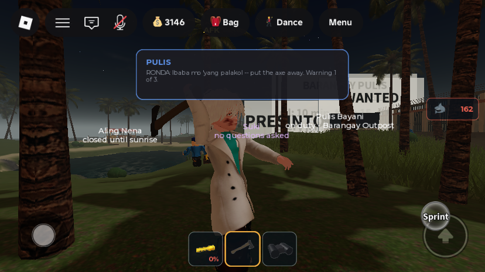
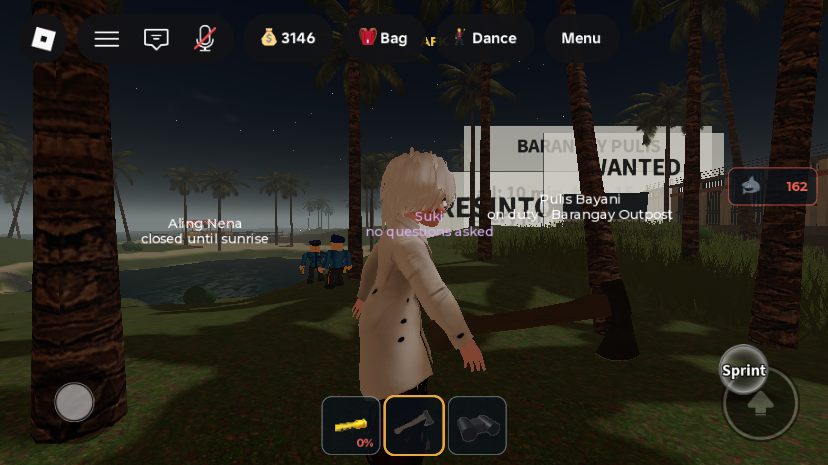
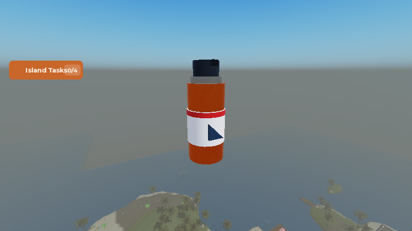
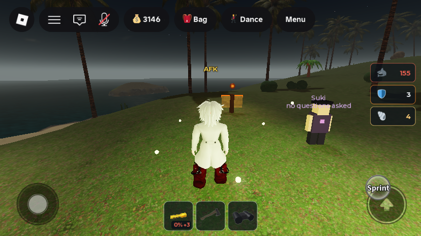
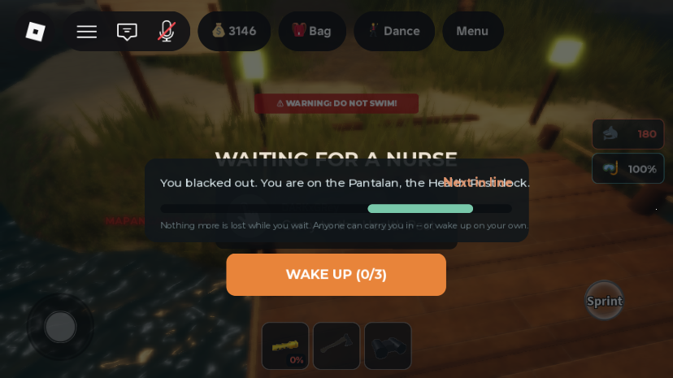

Phase B: self-revive, anyone can carry, axe swing with momentum, knife out / Shark Repellent in
What was asked
- Item 2 — "the player can revive themself longer than nurse or player, by solving actions, so if a player decided not to bring the patient in the hospital to waste time, the patient can still revive on its own and might cost nurse for intentional sabotage. patient pays both nurse and player cheaper on player".
- Item 4 — "update the animated action for axe and knife, it is too simple, make it look like having momentum when strike".
- Item 5 — drop the knife. A shark-defence consumable bought at the market, never in a starter pack, shown as a count with an icon on the right side, droppable, and taking bag space. The user chose: the existing "Fend it off!" check stays but is easier while carrying one, and one is used up on every lunge, win or lose.
1. Self-revive, player carriers, and stalling (item 2)
How the request was read: coming round alone must be slower than being carried in, and must take skill ("solving actions"). It is the fallback when nobody helps or the carrier stalls. Anyone, not just a nurse, can now carry a patient, and a passer-by bills less than a nurse. A carrier who holds a patient for a long time without reaching a bay is fined when the patient wakes up on their own.
- Anyone can carry. The Carry to the Health Post prompt on the dock no longer answers "Only a nurse can carry patients". A patient cannot carry themselves, and nobody who is a patient themselves can carry.
- Fees (
payNurse): a nurse (job holder) billsM.NURSE_FEE = 60; anyone else billsM.PLAYER_CARRY_FEE = 30. A fumbled lay-down still bills 60% of either, and it is still capped at what the patient has. Jailed service nurses still work for service credit. - Wake up alone.
SELF_REVIVE_DELAY = 50s after blacking out, a WAKE UP (0/3) button appears under the revive card; until then it counts down ("Wake up alone in 23s"). Pressing it runs server-scored radial checks in turn (SweepNeedle,ShrinkingRing,HoldFill, medium).SELF_REVIVE_HITS = 3passed checks, not necessarily in a row, bring the diver round where they lie, standing up and facing where their head pointed. A miss pausesSELF_RETRY_SECONDS = 4. It works on the dock and while being carried, not once laid in a scanner. The cosmetic "Stay with us" checks stop once waking up is possible, so the two never overlap. A bot revive takes about 40 s, so waking alone is always slower than an honest carry. - Stalling. If the patient comes round alone while carried and the carry has lasted
SABOTAGE_GRACE = 45s or more, the carrier paysSABOTAGE_FINE = 25Peso (capped at their balance) to the patient, and both are told why. A shorter carry just ends with "came round on their own. No fee." Bots are never fined. The oldPLAYER_CARRY_TIMEOUT = 100s (back on the dock, no fee) is unchanged. - New remote
Remotes.RequestSelfRevive(client → server, no arguments).ReviveStatusgained the kind"self"(label, enabled); an empty label hides the button.
2. Axe swing with momentum (item 4)
The knife is gone (item 5), so only the axe needed it. Both tools used to play Roblox's built-in "Slash" (a toolanim StringValue): the same limp one-arm flick for everything. An uploaded or Creator Store animation will not play here, because Roblox only plays animation assets owned by the place's owner or by Roblox, and publishing one needs the owner's account. So the chop is procedural, in the new module ReplicatedStorage.AxeSwing:
- Four key poses over 0.66 s on the right shoulder, elbow, waist, neck and left shoulder. Wind-up at 0.2 s: axe cocked back over the head, shoulders turned away. Impact at 0.3 s: arm driven through and body turned and leaning into it, eased with a cubic ease-in so the blade keeps accelerating until it lands, which is where the momentum reads. Follow-through at 0.4 s, past the target. Then it eases back into the carry pose.
- It is written into each joint's
TransforminRunService.PreSimulation, which runs after the Animator, so it sits on top of whatever the character is doing and blends in and out. It works onMotor6Djoints and on the newerAnimationConstraintjoints; the test avatar uses the latter (see Testing). R6 falls back to the shoulder alone. - A white
Trail(Axe.Handle.SwingTrail, between the new attachmentsTrailInner/TrailEdge) streaks behind the blade from 0.16 to 0.46 s. A whoosh plays at 0.2 s (rbxasset://sounds/swordslash.wav, which ships with every client, pitched down to 0.78). - Joint poses do not replicate, so every client draws it. The swinger's own
Axe.Swingplays it on click. The server'sAxe.SlashAnim(rewritten) relays each swing on the new remoteRemotes.AxeSwingto every other client, where the newStarterPlayerScripts.AxeSwingClientplays it on the swinger's character. The relay is limited to one perItemConfig.Bodega.HitCooldown. - The hit is sent when the blade lands (
AxeSwing.IMPACT = 0.3s after the click), not on the click. If the axe is put away mid-swing, nothing is sent.ItemConfig.Bodega.AxeDamagewas not touched. AxeSwing.Hold(character, t)freezes the pose at timet, for tuning and screenshots.


3. The knife is out; Shark Repellent is in (item 5)
- retired
StarterPack.DiveKnife→ServerStorage._Retired.StarterPack__DiveKnife.SharkServicelost the stab handler,RequestSharkHit,KNIFE_*,SHARK_HEALTH,sharkByModelandlastStabAt.DiveKnifeis out of the hotbar order inInventoryService.HOTBAR_RANKandHotbar.ORDER. Sharks are still driven off by a successful parry (driveOff), so nothing about shark fleeing depended on the knife. - new item
ItemConfig.Items.repellent, "Shark Repellent":slots = 0.5(it uses bag space),price = 40,usable = false(it goes off by itself),order = 7. It is sold at the Palengke like any gear, never in a starter kit, and is droppable and pick-up-able like other gear. - new model
ServerStorage.ItemAssets.SharkRepellent(an orange spray can with a label band, red stripe, shark-fin mark and black cap, 7 parts, pivot kept upright) and its icon copyReplicatedStorage.ItemIcons.repellent. - How it works (
SharkService.startLunge→spendRepellent): when a shark lunges, one can is taken from the carried bag if there is one (profile.Gear.repellent, thenInventoryRefresh). That makes the check one step easier: easy instead of medium by day, medium instead of hard at night. The subtitle says how many are left. It is spent whether the parry lands or not. - Right-side count:
StatusHudhas a new row, a shield icon and the number of cans carried, just under the shark count. It shows only while you carry any, and turns amber at 1.



All changes
| Path | What | |
|---|---|---|
| edited | ServerScriptService.ReviveService | self-revive (canSelfRevive, selfRevive, RequestSelfRevive handler, "self" status in the dispatcher tick), PLAYER_CARRY_FEE, stalling fine, carryStartedAt, anyone can carry, finish(t, message) |
| edited | StarterPlayerScripts.ReviveController | WAKE UP button, "self" status, cosmetic checks stop once unlocked, new wait hint |
| new | ReplicatedStorage.AxeSwing | procedural chop: Play, Hold, IMPACT |
| new | StarterPlayerScripts.AxeSwingClient | draws other players' swings |
| rewritten | StarterPack.Axe.SlashAnim | relays swings to other clients instead of toolanim |
| edited | StarterPack.Axe.Swing | plays the chop, sends the hit at impact (Phase D also added tolda targets) |
| new | StarterPack.Axe.Handle.{TrailInner, TrailEdge, SwingTrail} | blade trail |
| new | ReplicatedStorage.Remotes.{RequestSelfRevive, AxeSwing} | RemoteEvents |
| edited | ServerScriptService.SharkService | knife removed; repellent spent per lunge |
| edited | ReplicatedStorage.ItemConfig | Items.repellent |
| new | ServerStorage.ItemAssets.SharkRepellent, ReplicatedStorage.ItemIcons.repellent | model + icon |
| edited | StarterPlayerScripts.StatusHud | repellent row (column now 8 rows tall) |
| edited | ServerScriptService.InventoryService, StarterPlayerScripts.Hotbar | DiveKnife removed from the hotbar order |
| retired | StarterPack.DiveKnife | now ServerStorage._Retired.StarterPack__DiveKnife |
How it was tested
- Self-revive (Studio playtest; both bot nurses removed so nobody would carry the patient):
DebugDrown, and the button read "Wake up alone in 45s" and counted down. At 50 s it turned orange: "WAKE UP (0/3)". FiringRequestSelfRevivewith a scripted client pressing at the right moments gaveSweepNeedle→ShrinkingRing→HoldFill, all hits. 6.2 s after pressing: "You came round on your own.",Revivingcleared, the root upright (UpVector.Y = 1.00) and unanchored. - Shark Repellent: 3 cans via the real
ServerStorage.GiveToBaghook, and the new StatusHud row showed "3". Placed next to a shark in open water, the player met five lunges (all parried by the scripted client). The count went 3 → 0 and the row hid itself, so the first three lunges each spent a can and the last two found none. The Palengke lists "Shark Repellent — 40 Peso • 0.5 slot" (see Phase C/D). - Axe swing: sampling the shoulder joint every frame during
AxeSwing.Play: 82° → 205° by 0.2 s (wind-up), accelerating back through 171 → 145 → 90 → 50° between 0.26 and 0.31 s (the strike), 28° at 0.4 s, and back to the Animator's 79° by 0.65 s. The poses were then retuned from screenshots (wind-up 175°/35°, impact 35°/5°, follow-through 5°/10° shoulder/elbow), and the images above show the retuned wind-up and impact. - Bug found and fixed while testing: the test avatar's joints are
AnimationConstraints, notMotor6Ds, so the first version found no shoulder and silently did nothing. It now accepts either. - Knife removal: a full source scan found no remaining
DiveKnife/KNIFE_/RequestSharkHitreferences outside the retired tool. Sharks still flee after a parry.
Not verified / known gaps
- Needs 2 players (Studio Test → Clients and Servers): a player without the nurse job carrying a patient and being paid 30; the 45-second stalling fine; other players seeing a swing through
AxeSwingClient. - The axe was never swung by a real click in these tests. Studio's iPhone emulation is touch-only (
MouseEnabled = false), so simulated mouse clicks do not activate tools.Playwas driven directly, and the hit-at-impact timing inAxe.Swingis unverified against a live bodega. - The swing poses are hand-tuned numbers. If they look wrong on some avatars (very long arms, R6), adjust
KEYSinAxeSwing;Hold(character, t)makes that quick. - Drowning scatters the bag, repellent included. That is intended (it is gear), but worth knowing: a diver who drowns loses their cans.
MonetizationConfigstill says a "Shark Repellent" game pass is deliberately not sold. That pass is unrelated to this Peso consumable, but the name now overlaps.- Unchanged from before: the revive card's status text overlaps the "Next in line" label, and the EKG/pulse sound ids fail to load.